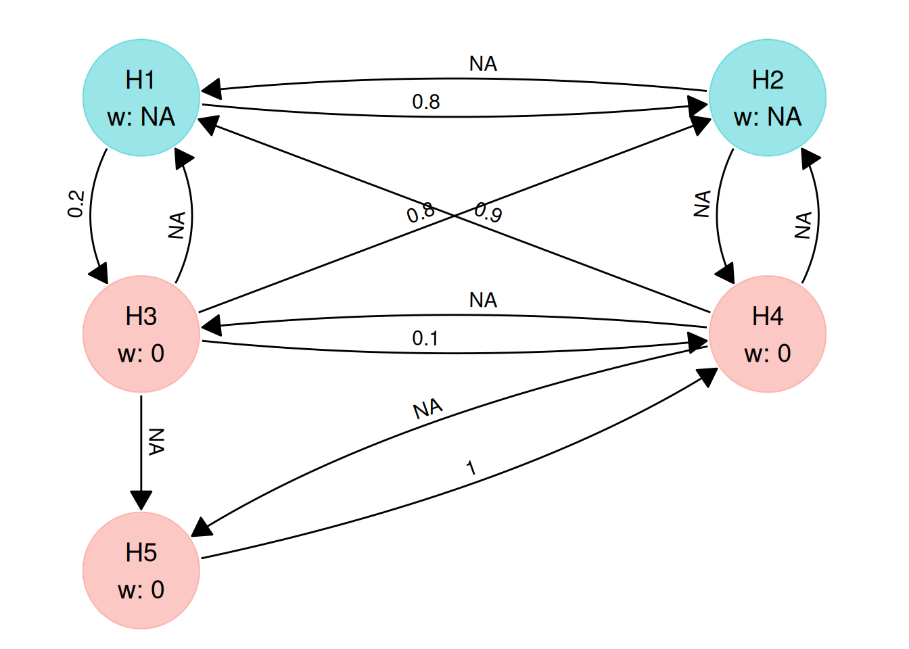
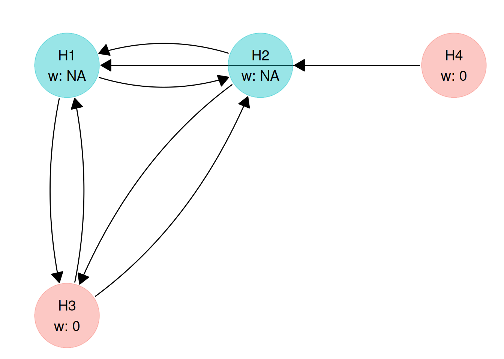
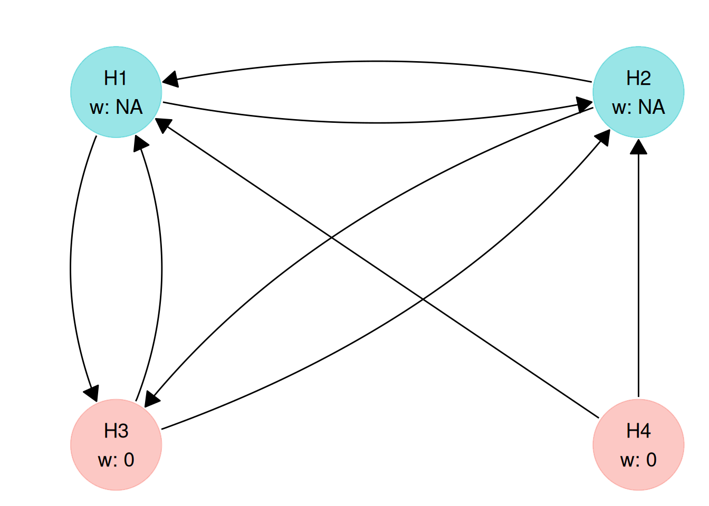
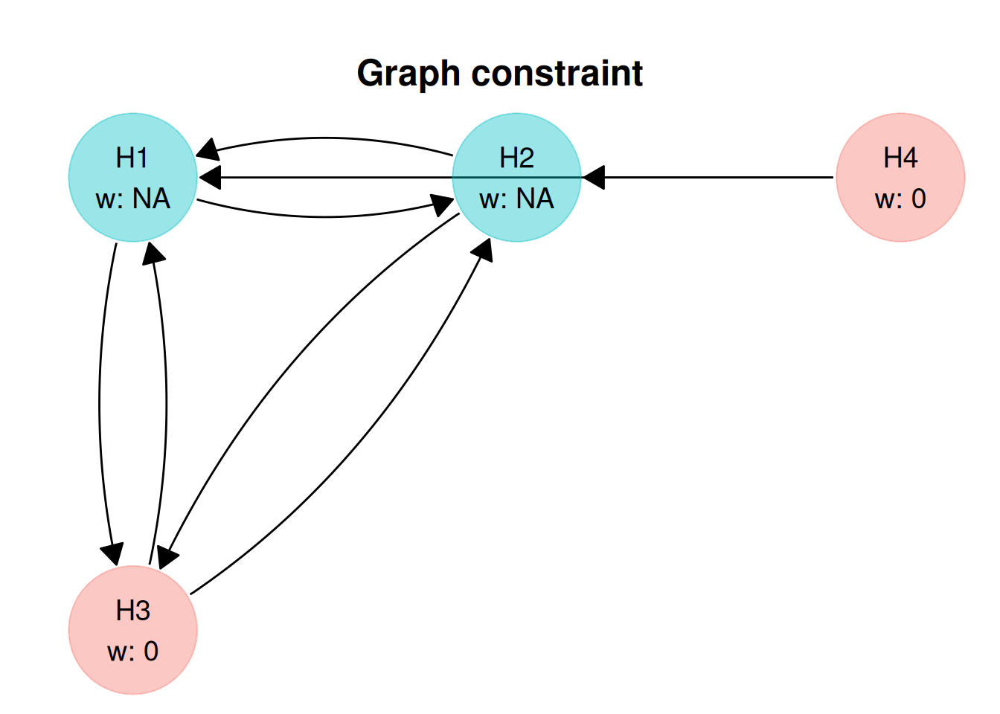
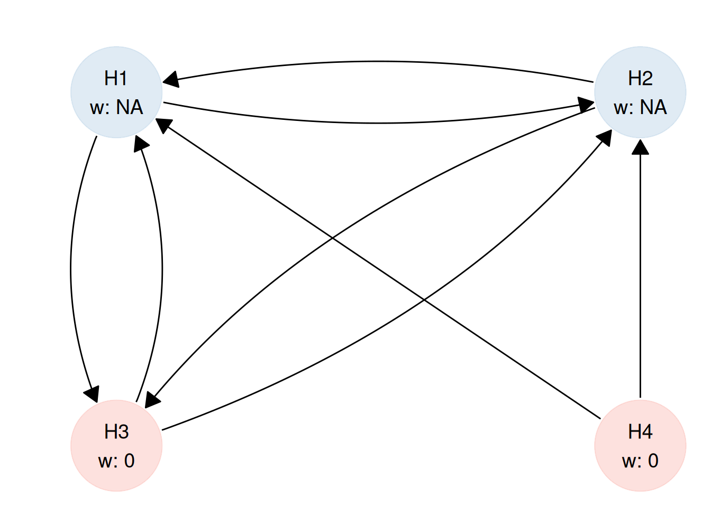

gc <- graph_constraint(
hyp_constraint = c(NA, NA, 0, 0),
trans_constraint = matrix(
c(
0, NA, NA, 0,
NA, 0, NA, 0,
NA, NA, 0, 0,
NA, NA, 0, 0
),
nrow = 4,
byrow = TRUE
)
)
gc
#> <multigrain_graph_constraint>
#> Constraints on hypothesis weights:
#> H1 H2 H3 H4
#> NA NA 0 0
#>
#> Constraints on transition matrix:
#> H1 H2 H3 H4
#> H1 0 NA NA 0
#> H2 NA 0 NA 0
#> H3 NA NA 0 0
#> H4 NA NA 0 0Why use graph constraints?
When setting up a graphical testing procedure, there are two main challenges:
Reflecting design intent: Often we already know certain structure of our graphical test from the protocol: for example, that only primary endpoints should receive initial alpha, or that alpha should not recycle back from secondary to primary endpoints. Encoding these as constraints ensures the graph matches the intended hierarchy and clinical priorities, without having to optimise every transition weight.
Speeding up the optimisation. If every hypothesis and transition weight is optimised, the search space quickly can be become very large, especially when you have many hypotheses to test. Constraints on the graph allow you to fix what is already decided and only optimise what is genuinely uncertain, making the optimisation procedure faster and results easier to interpret.
A multigrain_graph_constraint object lets you optimise a graph within these rules directly: fixed values where the design is pre-specified, and NA where optimisation is allowed. This makes it easier to find valid graphs that are aligned with the trial design and computationally tractable to optimise.
Create a graph constraint
A graph constraint object defines the constraints on the hypothesis weight vector and transition matrix for optimisation of graph-based multiple testing procedures.
There are several ways to build a graph constraint:
- by supplying both the vector of constraints on the hypothesis weight (
hyp_constraint) and the matrix defining the constraints on the transition between hypotheses (trans_constraint). - by supplying either
hyp_constraintortrans_constraint. If supplying only one of the key components, the other one will be regarded as unconstrained (all parameters are free to be optimised). - by supplying the number of hypotheses (
m). In this case both the hypothesis weight vector and the transition matrix will be unconstrained.
From hyp_constraint and trans_constraint
The main function used to build a multigrain_graph_constraint is graph_constraint(). You can access its documentation with ?graph_constraint. It takes several arguments, 2 of which we have already mentioned (hyp_constraint and trans_constraint).
In the example above names were automatically generated ("H1", "H2", "H3", and "H4"). This is controlled by the names optional argument, which, if unspecified, will name the hypotheses "H1", "H2", etc.
We can also supply custom names.
gc_named <- graph_constraint(
hyp_constraint = c(NA, NA, 0, 0),
trans_constraint = matrix(
c(
0, NA, NA, 0,
NA, 0, NA, 0,
NA, NA, 0, 0,
NA, NA, 0, 0
),
nrow = 4,
byrow = TRUE
),
names = c("FVC", "FEV1", "PRO", "QALY")
)
gc_named
#> <multigrain_graph_constraint>
#> Constraints on hypothesis weights:
#> FVC FEV1 PRO QALY
#> NA NA 0 0
#>
#> Constraints on transition matrix:
#> FVC FEV1 PRO QALY
#> FVC 0 NA NA 0
#> FEV1 NA 0 NA 0
#> PRO NA NA 0 0
#> QALY NA NA 0 0From hyp_constraint only
A multigrain_graph_constraint object can also be build by supplying only the hyp_constraint.
When a trans_constraint is not present, its dimensions will be derived from the hyp_constraint. In this case hyp_constraint has 4 elements, therefore trans_matrix will be a 4-by-4 square matrix with all 0 on the diagonal and all other values being NA. This translates in graph_optimise() later being allowed to optimise any parameter.
gc_hyp_cnstr_only <- graph_constraint(
hyp_constraint = c(NA, NA, 0, 0)
)
gc_hyp_cnstr_only
#> <multigrain_graph_constraint>
#> Constraints on hypothesis weights:
#> H1 H2 H3 H4
#> NA NA 0 0
#>
#> Constraints on transition matrix:
#> H1 H2 H3 H4
#> H1 0 NA NA NA
#> H2 NA 0 NA NA
#> H3 NA NA 0 NA
#> H4 NA NA NA 0From trans_constraint only
In a similar manner, we can supply only a trans_constraint in which case hyp_constraint will be assumed to have no constraints and similar dimensions.
gc_trans_cnstr_only <- graph_constraint(
trans_constraint = matrix(
c(
0, NA, NA, 0,
NA, 0, NA, 0,
NA, NA, 0, 0,
NA, NA, 0, 0
),
nrow = 4,
byrow = TRUE
)
)
gc_trans_cnstr_only
#> <multigrain_graph_constraint>
#> Constraints on hypothesis weights:
#> H1 H2 H3 H4
#> NA NA NA NA
#>
#> Constraints on transition matrix:
#> H1 H2 H3 H4
#> H1 0 NA NA 0
#> H2 NA 0 NA 0
#> H3 NA NA 0 0
#> H4 NA NA 0 0“Free” graph constraint
In a “free” graph constraint, all constraints are removed making all weights and transition values optimisable:
# we only need to supply the number of hypotheses
graph_constraint_free(5)
#> <multigrain_graph_constraint>
#> Constraints on hypothesis weights:
#> H1 H2 H3 H4 H5
#> NA NA NA NA NA
#>
#> Constraints on transition matrix:
#> H1 H2 H3 H4 H5
#> H1 0 NA NA NA NA
#> H2 NA 0 NA NA NA
#> H3 NA NA 0 NA NA
#> H4 NA NA NA 0 NA
#> H5 NA NA NA NA 0Validation
If graph_constraint() runs successfully, it always creates a valid multigrain_graph_constraint object. The validation happens automatically and consists of multiple checks. If any of them fail, graph_constraint() will throw an error.
The validation is silent when all the checks pass:
gc5 <- graph_constraint(
c(NA, NA, 0, 0, 0),
matrix(
c(
0, 0.8, 0.2, 0, 0,
NA, 0, 0, NA, 0,
0, 0.9, 0, 0.1, 0,
0.9, NA, NA, 0, 0,
1, 0, 0, 0, 0
),
nrow = 5,
byrow = TRUE
)
)
gc5
#> <multigrain_graph_constraint>
#> Constraints on hypothesis weights:
#> H1 H2 H3 H4 H5
#> NA NA 0 0 0
#>
#> Constraints on transition matrix:
#> H1 H2 H3 H4 H5
#> H1 0.0 0.8 0.2 0.0 0
#> H2 NA 0.0 0.0 NA 0
#> H3 0.0 0.9 0.0 0.1 0
#> H4 0.9 NA NA 0.0 0
#> H5 1.0 0.0 0.0 0.0 0And throws an error at the first failing check:
graph_constraint(
hyp_constraint = c(NA, NA, 0, 0, 0),
trans_constraint = matrix(
c(
0, 0.8, 0.2, NA, 0,
NA, 0, 0, NA, 0,
0, 0.9, 0, 0.1, 0,
0.9, NA, NA, 0, 0,
1, 0, 0, 0, 0
),
nrow = 5,
byrow = TRUE
)
)
#> Error in `graph_constraint()`:
#> ! At least one incomplete transition matrix row has a single optimisable
#> (i.e. `NA`) value.
#> ℹ For a more detailed diagnosis run `graph_constraint()` with `diagnose =
#> TRUE`.If a detailed diagnosis is desired (especially if we suspect there might be multiple failing checks), we can call graph_constraint() with diagnose = TRUE (the default value for diagnose being FALSE). In this case, we are informed our transition matrix constraint would actually fail 2 of the checks:
- a single value to optimise on row 1 (which can effectively be set to
0), and - an incomplete row already adding up to
1(same row).
graph_constraint(
hyp_constraint = c(NA, NA, 0, 0, 0),
trans_constraint = matrix(
c(
0, 0.8, 0.2, NA, 0,
NA, 0, 0, NA, 0,
0, 0.9, 0, 0.1, 0,
0.9, NA, NA, 0, 0,
1, 0, 0, 0, 0
),
nrow = 5,
byrow = TRUE
),
diagnose = TRUE
)
#>
#> ── Hypothesis weight constraint diagnosis:
#> ✔ All hypothesis weights constraint values are less than or equal to 1.
#> ✔ All hypothesis weights constraint values are greater than or equal to 0.
#> ✔ The hypothesis weights constraint vector is correctly defined for optimising 2 weights.
#> ✔ The sum of the incomplete hypothesis weights constraint vector is less than 1.
#>
#> ── Transition matrix constraint diagnosis:
#> ✔ All values on the transition matrix diagonal are 0.
#> ✔ The transition matrix is square.
#> ✔ All transition matrix values are less than or equal to 1.
#> ✔ All transition matrix values are greater than or equal to 0.
#> ✖ At least one incomplete transition matrix row has a single optimisable (i.e. `NA`) value.
#> • Row 1: [0, 0.8, 0.2, NA, 0] the optimisable value is effectively equal to
#> 0.
#> ✔ All complete transition matrix rows sum up to 1.
#> ✔ No incomplete transition matrix rows have a sum greater than 1.
#> ✖ At least one incomplete transition matrix row has a sum equal to 1.
#> • Row 1: [0, 0.8, 0.2, NA, 0] has a sum of 1.
#>
#> ── Hypothesis weight and transition matrix constraints consistency:
#> ✔ The hypothesis weights vector has 5 elements.
#> ✔ The transition matrix has 5 columns and 5 rows.
#> Error in `graph_constraint()`:
#> ! At least one incomplete transition matrix row has a single optimisable
#> (i.e. `NA`) value.
#> ℹ For a more detailed diagnosis run `graph_constraint()` with `diagnose =
#> TRUE`.Running graph_constraint(..., diagnose = TRUE) surfaces all the checks being ran when creating a graph constraint object:
- checks on the hypothesis weight constraint vector:
- individual values are less than or equal to 1
- individual values are greater than or equal to 0
- a single
NAvalue cannot be optimised, at least 2 are needed - if the vector is incomplete, the sum of all elements must be less than 1. If complete, the sum must be 1.
- checks on the transition matrix constraint:
- all values on the diagonal must be 0.
- the transition matrix is square.
- all values are less than or equal to 1.
- all values are greater than or equal to 0.
-
incomplete rows have at least 2
NAvalues - complete rows have a sum equal to 1.
- incomplete rows have a sum less than 1.
- consistency (between the hypothesis weight and transition matrix constraints):
- if the hypothesis weight constraint vector has
melements, then the transition matrix ism * m(and vice versa).
- if the hypothesis weight constraint vector has
Tolerance
A core pillar of the graph constraint validation is the comparison to 1. Floating point arithmetic in all programming languages is an approximation of the real arithmetic. For this reason we do not aim for an absolute comparison, but rather we want to know if, for example, the sum of the hypothesis weights is close to 1. How close? Enter the tolerance argument. Differences smaller than tolerance are ignored. The default value (sqrt(.Machine$double.eps)) is the same as used by the base R all.equal() function and is close to 1.5e-8.
Let’s look at an example. If we rely on the default graph_constraint() tolerance the object is built even thought the sum of the complete hypothesis weight vector is not strictly equal to 1:
graph_constraint(
hyp_constraint = hyp_weight_tol
)
#> <multigrain_graph_constraint>
#> Constraints on hypothesis weights:
#> H1 H2 H3 H4 H5
#> 0.2640880404 0.4298370699 0.1540376033 0.0001980512 0.1518392353
#>
#> Constraints on transition matrix:
#> H1 H2 H3 H4 H5
#> H1 0 NA NA NA NA
#> H2 NA 0 NA NA NA
#> H3 NA NA 0 NA NA
#> H4 NA NA NA 0 NA
#> H5 NA NA NA NA 0We can control how stringent the comparison is. For example, setting the tolerance to 0 will result in the check no longer ignoring the 10e-13 difference.
graph_constraint(
hyp_constraint = hyp_weight_tol,
tolerance = 0
)
#> Error in `graph_constraint()`:
#> ! The sum of the hypothesis weight constraint vector cannot be greater
#> than 1. It is 1.000000000005.
#> ℹ For a more detailed diagnosis run `graph_constraint()` with `diagnose =
#> TRUE`.Modifying a graph constraint
We can access and modify individual constraint values.
gc5
#> <multigrain_graph_constraint>
#> Constraints on hypothesis weights:
#> H1 H2 H3 H4 H5
#> NA NA 0 0 0
#>
#> Constraints on transition matrix:
#> H1 H2 H3 H4 H5
#> H1 0.0 0.8 0.2 0.0 0
#> H2 NA 0.0 0.0 NA 0
#> H3 0.0 0.9 0.0 0.1 0
#> H4 0.9 NA NA 0.0 0
#> H5 1.0 0.0 0.0 0.0 0Let’s modify the value for the H1 -> H2 transition constraint from 0.8 to 0.7.
# get the value
gc5$trans_constraint["H1", "H2"]
#> [1] 0.8
# update the value
gc5$trans_constraint["H1", "H2"] <- 0.7
#> Error in `graph_constraint()`:
#> ! The sum of complete transition matrix constraint rows must be 1.
#> ℹ For a more detailed diagnosis run `graph_constraint()` with `diagnose =
#> TRUE`.Validation also takes place when we modify an existing multigrain_graph_constraint object. In this case the sum of the H1 row (which is complete) does not add up to 1. We need to modify multiple values in order to maintain validity. Let’s modify the entire H1 row.
gc5$trans_constraint["H1", ]
#> H1 H2 H3 H4 H5
#> 0.0 0.8 0.2 0.0 0.0
# update the value
gc5$trans_constraint["H1", ] <- c(0, 0.7, 0.2, 0.05, 0.05)
gc5
#> <multigrain_graph_constraint>
#> Constraints on hypothesis weights:
#> H1 H2 H3 H4 H5
#> NA NA 0 0 0
#>
#> Constraints on transition matrix:
#> H1 H2 H3 H4 H5
#> H1 0.0 0.7 0.2 0.05 0.05
#> H2 NA 0.0 0.0 NA 0.00
#> H3 0.0 0.9 0.0 0.10 0.00
#> H4 0.9 NA NA 0.00 0.00
#> H5 1.0 0.0 0.0 0.00 0.00We can modify the hyp_constraint component in a similar manner. We want to optimise the H3 weight, so let’s set the constraint to NA:
gc5$hyp_constraint["H3"]
#> H3
#> 0
# update the value
gc5$hyp_constraint["H3"] <- NA
gc5
#> <multigrain_graph_constraint>
#> Constraints on hypothesis weights:
#> H1 H2 H3 H4 H5
#> NA NA NA 0 0
#>
#> Constraints on transition matrix:
#> H1 H2 H3 H4 H5
#> H1 0.0 0.7 0.2 0.05 0.05
#> H2 NA 0.0 0.0 NA 0.00
#> H3 0.0 0.9 0.0 0.10 0.00
#> H4 0.9 NA NA 0.00 0.00
#> H5 1.0 0.0 0.0 0.00 0.00Inspecting a graph constraint
Printing a graph constraint
So far we have been using the print() method to inspect multigrain_graph_constraint objects:
# either implicitly
gc
# or explicitly
print(gc)Plotting a graph constraint
Another way of inspecting a multigrain_graph_constraint object is to plot it, which can be done either with autoplot() or plot() functions. They are identical and, under the hood, rely on the {ggplot2} and {ggraph} packages.
The different colour indicates the hypothesis weights which are unset (and will be optimised).
gc <- graph_constraint(
c(NA, NA, 0, 0, 0),
matrix(
c(
0, 0.8, 0.2, 0, 0,
NA, 0, 0, NA, 0,
NA, 0.8, 0, 0.1, NA,
0.9, NA, NA, 0, NA,
0, 0, 0, 1, 0
),
nrow = 5,
byrow = TRUE
)
)
autoplot(gc)
Customise a plot
Most of the time the automated plot will be enough, but occasionally you might need to modify it.
Different root
Plotting relies on a layout derived with igraph::layout_as_tree(), which positions the nodes as an inverted (root-at-the-top) tree. In many cases, a graph will be constrained such that alpha is initially allocated on primary endpoints. The plotting method tries to automatically detect such structures so that primary or more important hypotheses are displayed at the root of the tree. One way to modify the plot is to supply a custom root if we are not happy with the automatically detected one. root should be an integer vector indicating which nodes should be regarded as root:
Layout data
If customising the root does not result in satisfactory results, we have the option to modify the layout data directly (an added benefit of the plot being a ggplot2 object).
gc <- graph_constraint(
hyp_constraint = c(NA, NA, 0, 0),
trans_constraint = matrix(
c(
0, NA, NA, 0,
NA, 0, NA, 0,
NA, NA, 0, 0,
NA, NA, 0, 0
),
nrow = 4,
byrow = TRUE
)
)
graph_constraint_plot <- plot(gc)
graph_constraint_plot
In this example, we do not have a great looking plot (the position of H4 is not ideal). Let’s start by exposing the layout data:
graph_constraint_plot$data
#> # A tibble: 4 × 8
#> x y name weight optimised .ggraph.orig_index .ggraph.index circular
#> <dbl> <dbl> <chr> <dbl> <lgl> <int> <int> <lgl>
#> 1 -1 1 H1 NA TRUE 1 1 FALSE
#> 2 0 1 H2 NA TRUE 2 2 FALSE
#> 3 -1 0 H3 0 FALSE 3 3 FALSE
#> 4 1 1 H4 0 FALSE 4 4 FALSEWe want the H4 node to be on the same level as H3 and directly under H2 (we’d like a square layout). All we need is to modify the x and y coordinates of H4 and set them to 0.
graph_constraint_plot$data$y[4] <- 0
graph_constraint_plot$data$x[4] <- 0
graph_constraint_plot
Other plot elements
Title
We can add a title by passing a string to the title argument of the plotting functions (either plot() or autoplot()).
gc_plot_title <- plot(gc, title = "Graph constraint")
gc_plot_title
or at a later date by manipulating the ggplot2 object.
gc_plot_no_title <- plot(gc)
gc_plot_no_title +
# add the title
ggplot2::ggtitle("Graph constraint") +
# centre it horizontally
ggplot2::theme(
plot.title = ggplot2::element_text(
hjust = 0.5
)
)
Scale
Another benefit of plot() producing a ggplot object, is we can manipulate many properties with the standard {ggplot2} functionality. We can add a title or change the colour scale, for example:
graph_constraint_plot +
# change the colour palette
ggplot2::scale_colour_brewer(
palette = "Pastel1"
)
Modifying the title or the colour palette are just two examples of customisation that can be applied to ggplot2 graphs.